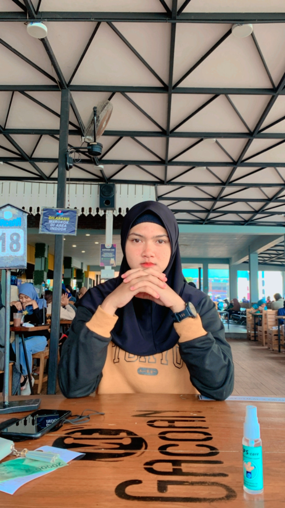
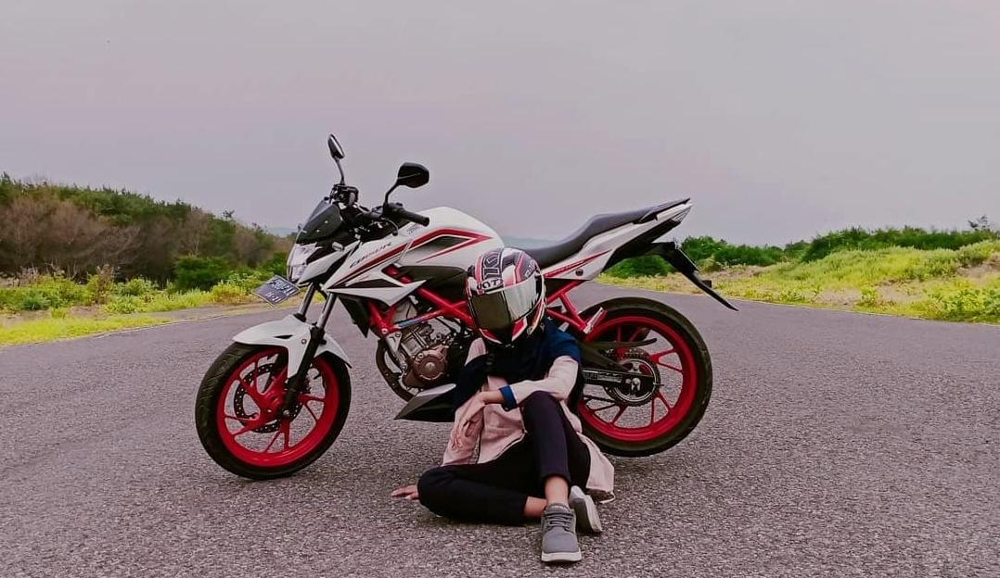
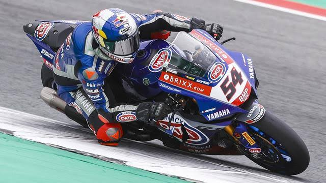
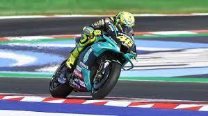
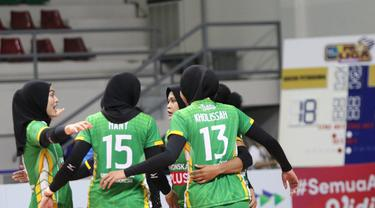
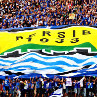

Aula Zahra
Kekompakan team Aula Zahra dan teman-teman dari Universitas Ahmad Dahlan dalam setiap pertandingan.

Nanda Elfitra
Coach dari pembalap kita persiapkan Nanda untuk bersaing di kejuaraan Road Race di Jambi.
Berita Terbaru

Meski bisa menyamai poin kalau juara di race 2 WSBK, namun Toprak dinilai lebih unggul. Soalnya dia lebih banyak menang di WSBK 2021 ketimbang Jonathan Rea. Kemenangan Rider dengan Nomor 54 itu juga mengakhiri dominasi Jonathan Rea yang selalu juara di enam edisi WSBK sebelumnya. Jalannya balap berlangsung seru karena salip menyalip sempat terjadi. Toprak sempat memimpin balapan tapi dia melebar di lap ke-12 sehingga disalip Jonathan Rea hingga finis di posisi pertama.
Populer

Rossi tidak mampu meraih hasil positif. Dalam tujuh seri balapan, pembalap Petronas Yamaha SRT itu hanya mengumpulkan 15 poin.

Tim putri Gresik Petrokimia Pupuk Indonesia dan tim putra Jakarta Pertamina Pertamax berhasil meraih kemenangan dalam seri kedua.
Persib bandung merayakan ulang tahun yang ke 83, semua pemain berharap kedepanya persib akan sukses.